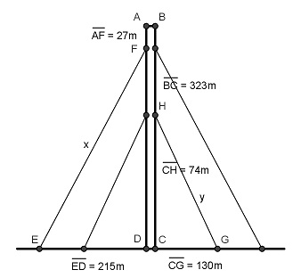

Pythagoras Aufgabe 11 Ein Sendemast ist 323 m hoch. 27 m unterhalb der Spitze sind zwei Halteseile angebracht, die 215 m vom Mast entfernt verankert sind. Zwei weitere Halteseile sind in einer Höhe von 74 m befestigt und 130 m entfernt verankert. Berechnen Sie die Länge der beiden Halteseile in m.

BC = DA = 323 m DF = DA – FA = 323 m – 27 m = 296 m Rechter Winkel bei D. Satz von Pythagoras im Dreieck EDF: EF2 = x2 = ED2 + DF2 x2 = 2152 m2 + 2962 m2 = 133 841 m2 |√ Größere Länge x: x = = 365,8 m Rechter Winkel bei C. Satz von Pythagoras im Dreieck CGH: GH2 = y2 = CG2 + CH2 y2 = 1302 m2 + 742 m2 = 22 376 m2 |√ Kleinere Länge y : y = = 149,6 m